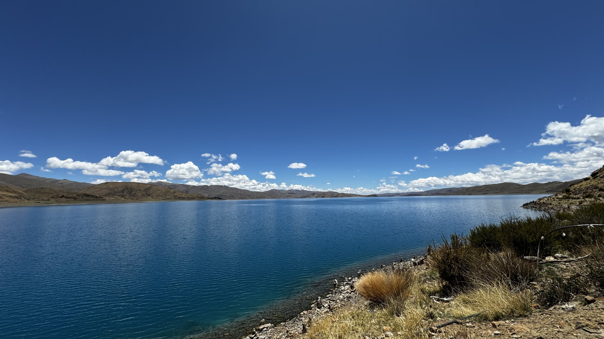
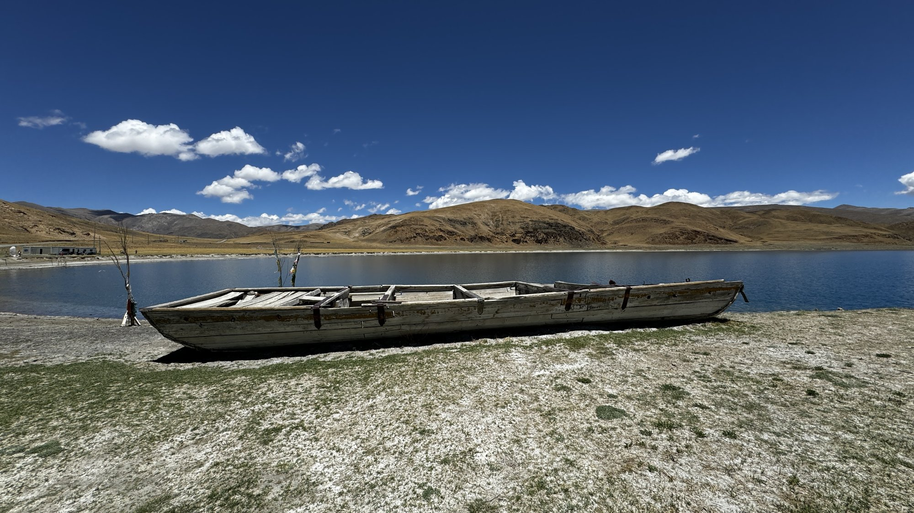
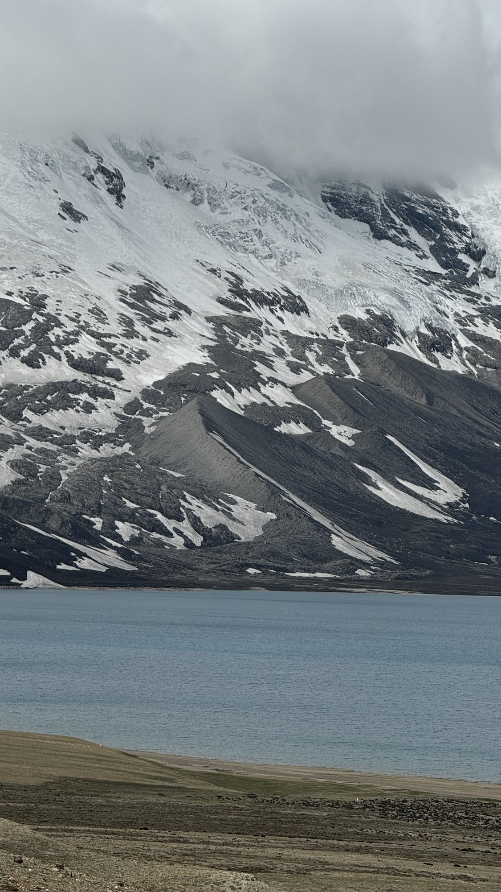
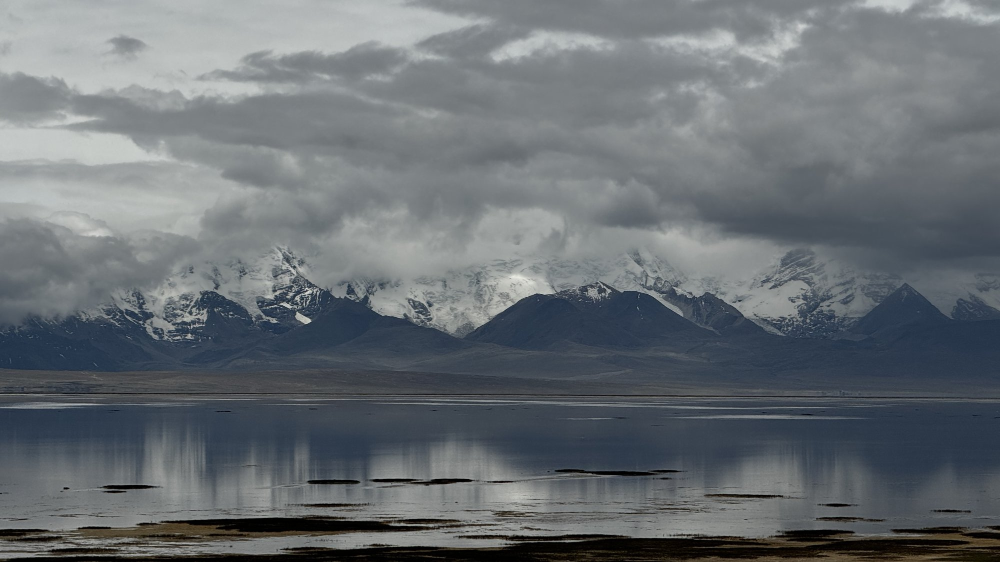
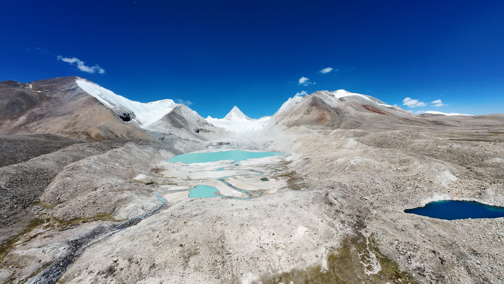
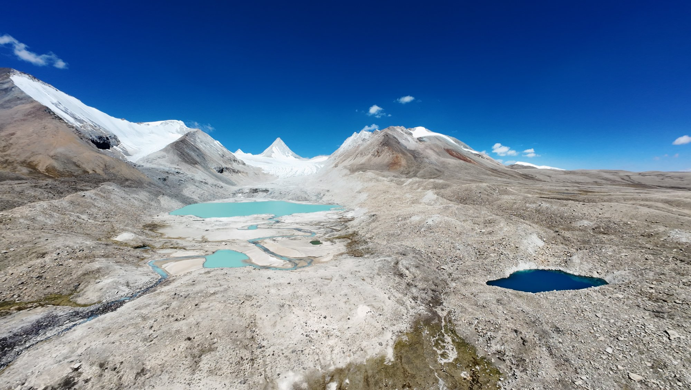
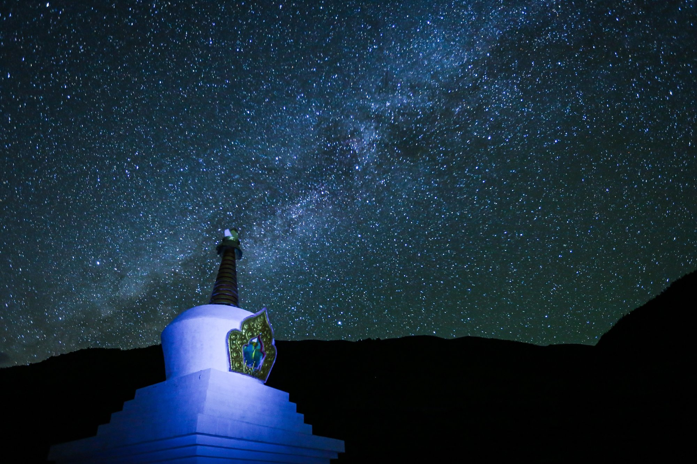

世界屋脊 · 一措再措
圣湖
雪山
镜面湖水，倒映天光云影与巍峨雪山
世界屋脊 · 一措再措
镜面湖水，倒映天光云影与巍峨雪山

雪山之巅，圣湖之畔
在藏语中，"措"意为湖泊。阿里大环线沿途，纳木错、玛旁雍错、羊卓雍错……一措再措，每一个湖泊都蓝得纯粹、蓝得心醉。
没有风的午后，湖面平静如镜，倒映着皑皑雪山与朵朵白云，分不清哪是天、哪是水，构成世界屋脊最纯净的对称画卷。
这些圣湖在藏族人心目中地位神圣，信徒环湖转经祈福，相信湖水能洗涤罪孽、带来福祉。







